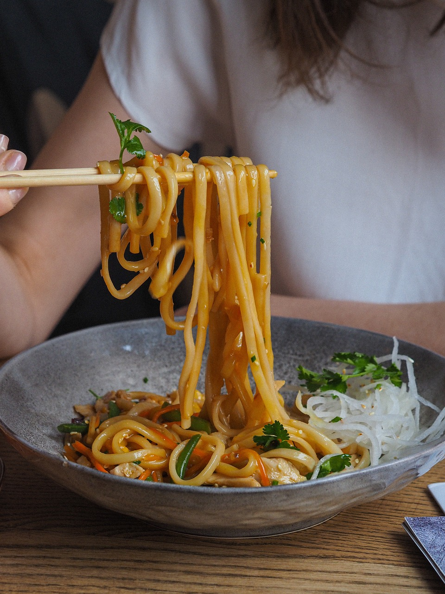

Japanese-style Noodles

Description
Stir-fried vegetables and tofu with udon noodles and a Japanese-inspired sauce made from white misopaste and sesame oil.
Suitable for vegans.
Ingredients
- Udon noodles
- Stir fry vegetables
- Tofu
- Sauce
- White miso paste
- Sesame oil
- Tomato puree
- Garlic powder
- Ginger
- Smoked paprika
Steps
- Stir fry tofu and vegetables
- Add noodles to stir fry
- Make sauce in small bowl by adding and mixing all sauce ingredients
- Add sauce to stir fry